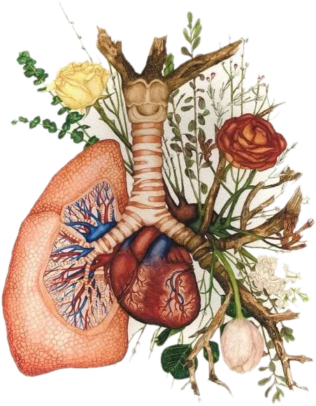
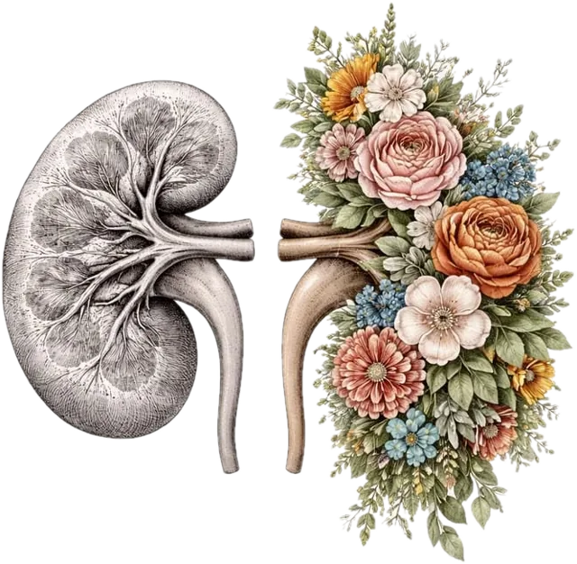
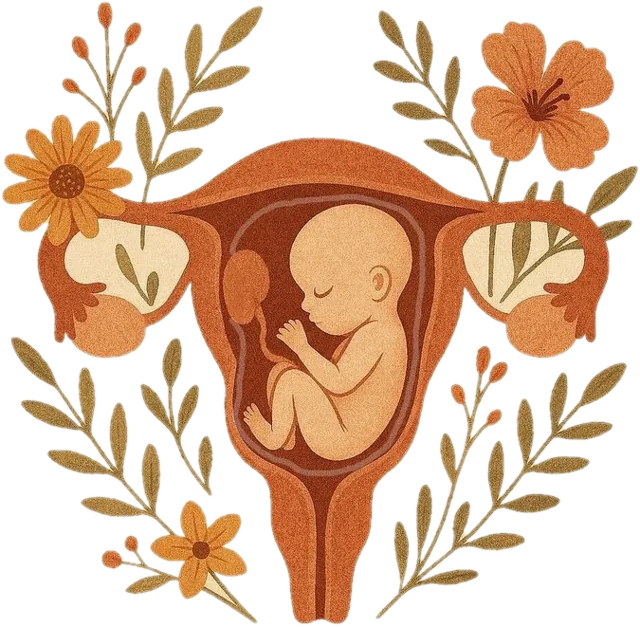

Medicine
Medicine is more than diagnosis and treatment plans. It is listening closely, learning endlessly, and showing up for people in their most vulnerable moment.
The systems I keep coming back to

Heart
four chambers, one rhythm[One honest sentence about why the heart pulls you in.]
Worked on: Infective endocarditis, taught as a tutorial in Medicine 1, and antiplatelet therapy in chronic coronary syndrome through a ticagrelor vs clopidogrel study in progress.
Training: Cardiology rotation at Meniet El-Nasr Central Hospital (October 2026): ECG, echo, central line, emergency defibrillation. ESC Council on Cardiovascular Genomics.

Lungs
the tree that breathes[One honest sentence about the lungs.]
Worked on: A case of COPD exacerbation with underlying myxedema coma, presented as a Semester 4 grand round.
Training: Chest teaching within Internal Medicine, Basic Life Support (NHCPS, 2023), open chest drain insertion on the Incision Academy course.

Brain
where the questions start[One honest sentence about the brain.]
Worked on: Pediatric brain tumors (tutorial), peripheral neuropathy (The Hidden Pain), and how little the public knows about multiple sclerosis.
Training: Semester 5 grand round, a risk assessment reaching 100+ students from 10 Egyptian universities, MS awareness study across Egypt, Jordan and Libya.

Kidneys
quiet, constant work[One honest sentence about the kidneys.]
Worked on: Chronic kidney injury, told through a grand round with a patient and doctor role play, and how blood pressure, heart and kidneys feed into each other.
Training: Semester 5 grand round (considered one of the best in the round). Hypertension and cardio-renal-metabolic workshop, Novartis Egypt, 2025.

Endocrine
small glands, big effects[One honest sentence about hormones.]
Worked on: Posterior pituitary disorders, taught as a tutorial in Medicine 2.
Training: PASID congress (Pan Arab Society for Interventional Endocrinology and Diabetes Technology, 2025).

Blood
the river that carries it all[One honest sentence about hematology.]
Worked on: Recent innovations in Hodgkin lymphoma diagnosis, presented as a poster at the university hematology conference (12 June 2023).
Training: Hematology within Internal Medicine and Pediatrics (hematology and BM transplant).

Reproductive
where autonomy and care meet[One honest sentence about women’s health.]
Worked on: Ovarian cancer, taught as a tutorial in Gynaecology, and why informed choice in childbirth matters.
Training: Gynaecology and Obstetrics rotation (May to June 2026), the C-section reduction project, Novartis female health workshop.
Teaching
Five tutorials I prepared and taught as slide decks, each part of a course.
Built
Caprini risk score assessment
A tool I developed for venous thromboembolism prophylaxis. It gives a Caprini score and the degree of prophylaxis recommended.
[Open the tool: link]
Grand rounds and posters
Grand round.
Grand round, case report.
Grand round, plus a risk assessment for peripheral neuropathy based on the daily habits of medical students. It reached 100+ participants from 10 universities in Egypt.
Grand round with a patient and doctor role play. Considered one of the best in the round.
Poster presentation at the university hematology conference (12 June 2023).
Research in progress
Study design, questionnaire development, literature review.
Literature review, study framework, manuscript preparation.